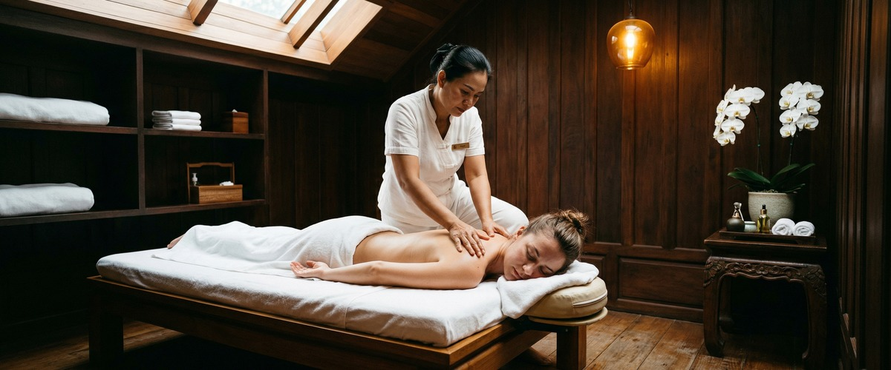
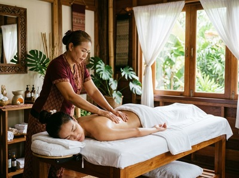

If your body feels stiff when you stand up in the morning, if reaching overhead or bending down takes effort, or if your muscles feel perpetually tight no matter how much you move, your flexibility is telling you something.

Reduced range of motion is one of the most common physical complaints among adults in Glasgow. It quietly affects posture, performance, and daily comfort. Thai massage, deep tissue, and sports massage are among the most effective approaches for restoring the joint mobility and muscle suppleness your body needs to function well.
Flexibility is the ability of joints and surrounding tissues to move through a full, pain-free range of motion. It depends on muscle elasticity, connective tissue health, and joint integrity. When any of these breaks down, movement becomes restricted and uncomfortable.

Fascia is the connective tissue that wraps around muscles and organs. After injury, long periods of sitting, or poor posture, it hardens and tightens — pulling the surrounding tissue with it and reducing how far a joint can move.
Common causes include desk-based work, repetitive strain, ageing, and poor recovery after exercise. Tight muscles also tire more quickly. This puts extra load on other muscle groups and raises the risk of injury.
Massage works directly on the physical causes of restricted movement. Sustained pressure and assisted stretching raise tissue temperature. This softens fascia and allows it to lengthen. A systematic review published in PMC found that massage therapy significantly improved shoulder range of motion. Similar results have been found for hamstring length and lower back mobility.
Traditional Thai massage is well suited to this goal. It combines acupressure along the body's sen energy lines with assisted passive stretching. Joints are moved through their full range while the client stays relaxed and supported. This stimulates blood flow to tight tissues, releases holding patterns, and restores the natural balance between muscle groups.
Thai oil massage warms the tissue with heated oil before deeper work begins. This makes the fascia more open to pressure. For those recovering from training or managing a sports-related issue, Thai sports massage targets the specific movement patterns and imbalances that limit performance.
At Glasgow Thai Massage on West Nile Street, a flexibility-focused session starts with a short chat about where movement feels restricted and what your daily activity looks like. Maliwan and Jariya, both trained at the Wat Pho Thai Massage School in Bangkok, work through the body's key movement areas: hips, hamstrings, thoracic spine, shoulders, and ankles. You can book your session online in advance to allow time for this intake.
Traditional Thai massage is done fully clothed on a comfortable mat. Your therapist guides you into assisted stretches that open joints and lengthen muscles. They hold each position while applying acupressure to the surrounding tissue.
Most clients notice a clear difference in how freely they move after just one session. For lasting change in chronic stiffness, regular sessions build results that a single visit cannot match.
Anyone with restricted movement will benefit. But the clients who see the biggest gains tend to fall into a few groups. Office workers who sit for seven or more hours a day often develop tight hip flexors and a rounded upper back. Runners and cyclists shorten specific muscle groups through repeated movement. People over 40 frequently notice a gradual loss of how freely they move.
Those returning to activity after illness, injury, or time off also respond well. If you are ready to move better, book a session at Glasgow Thai Massage and give your body the attention it has been asking for.
Massage and stretching work on different parts of the problem. Stretching lengthens muscle fibres. Massage works on the fascia, circulation, and holding patterns that stretching alone cannot always reach.
Research published in PMC shows that combining massage with stretching produces better results than stretching on its own. For chronic stiffness rooted in tight fascia or muscle imbalance, massage is often the more effective place to start.
Many clients notice a difference after a single session, especially in areas that have been tight for a long time. For more stubborn restrictions, four to six sessions spaced one to two weeks apart typically produces lasting change.
Regular monthly sessions then preserve those gains and stop tightness from coming back.
Traditional Thai massage is among the most effective. It combines assisted passive stretching with acupressure, which moves joints directly and lengthens connective tissue while the muscles stay fully relaxed.
Thai sports massage is the better choice for athletes or those with sport-specific restrictions. Your therapist at Glasgow Thai Massage will guide you to the right treatment based on your goals and where you feel restricted.
Flexibility does decline with age as connective tissue loses some of its elasticity. But how much it declines depends heavily on activity levels and regular therapeutic care.
Many clients in their 50s and 60s report a clear improvement in range of motion after a course of Thai massage. Age-related stiffness is manageable — it is not simply inevitable.
Yes. After an injury, fascia around the area often scars and hardens. This creates adhesions that restrict movement long after the original injury has healed.
The techniques used in Thai massage and deep tissue massage work to break down these adhesions and restore normal tissue movement. If you have had a recent injury or surgery, speak with your therapist before booking so they can tailor the session safely.
Absolutely. When you book your appointment at Glasgow Thai Massage, you are welcome to describe where movement feels most restricted. Maliwan and Jariya will focus their work accordingly — whether that is tight hips from desk work, restricted shoulders from repetitive activity, or hamstrings that are holding back your training.